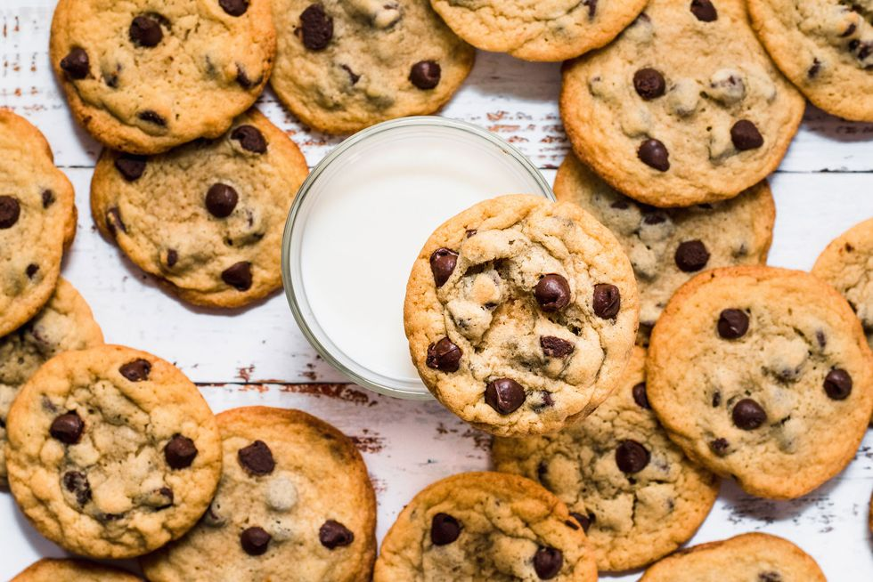

Chocolate Chip Cookies

The quintessential cookie, that of the chocolate chip, is the most amazing thing anyone ever invented.
With a slight crisp on the outside, and a tender middle sprinkled with dallops of chocolate, who can resist these chocolately moresels?
Ingredients:
- 1 cup of butter, softened
- 1/2 cup white sugar
- 3/4 cup brown sugar
- 2 eggs
- 2 teaspoons of vanilla extract
- 1 teaspoon of baking soda
- 1 teaspoon of baking powder
- 1/2 teaspoons salt
- 3 Cups of all purpose flour
- 2 cups of semisweet chocolate chips
Directions:
- Preheat oven to 350 degrees F (175 C)
- Cream together the butter and suger until smooth.
- Beat the eggs in one by one.
- Stir in the vanilla and add the salt.
- In a seperate bowl, mix the flower with baking soda and baking powder.
- Combine everything into a single bowl and mix in two cups of chocolate chips.
- Scoop out tablespoon sized balls and place in rows onto a baking sheets.
- Bake for 12 minutes or until cookies start to turn golden brown.